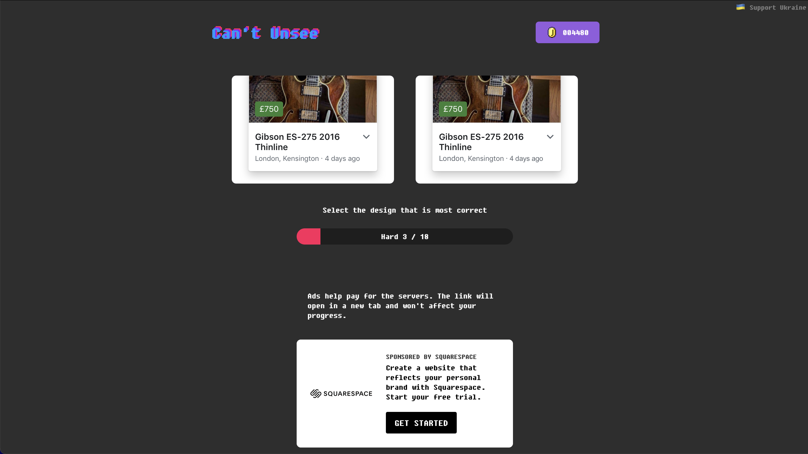

Wot is WWW? What is interactive media?
HuntNGather
Parametro is a design studio started in Monterrey, Mexico and now based in Paris and New York. Their website features a carousel showcasing their work, in which users can hover over a work to see details of the project appear above the carousel. The carousel follows a similar notion to my concept and it’s hover feature is intriguing. I would like to adapt this feature for my own site.
Antione Wodniack is an experience designer and developer based in France. He founded Waark, a french creative design studio and incredibles.dev, a developers collective. His work often uses animation to add excitement and fun. In his portfolio he consistently uses different animation which add to the user experience of the site: the background lines following the cursor, animated transition between pages. These kinds of animation are very stimulating and would be fun to add to my site if possible.
Agorespace is a community space or court designed to facilitate 8 different sports within the same field. The multisports field was intended to create community through sport and provide a larger array of sport facilities involving less space and cost. The concept is displayed in 3D simulative site which displays the court and provides tooltips to explain the court’s features and capabilities. This includes a menu bar of all sports that can be played which when clicked provides an animation on the court of how the sport can be played. This medium is a really effective way to showcase the concept and allows a similar experience to see the court in person. The interactivity and fun animations also really align with the sports theme.
Spacial.io
The site uses standard and common structure with a menu bar and hero banner followed by modular sections of content - each about the same size - and a footer. Some of sections include automatic carousels featuring brands (under the hero) and other work by the brand.
Fonts: ff-real-headline-pro for the headers, ff-real-text-pro for body
Colours: Black (HSL: 0 0 25), White (#fff), Blue (HSL: 212 100 50)
The colour palette is quite dark using primarily a dark grey as the background and blue and white as accents. The blue often appear in gradient within buttons which turns to solid blue when hovered over to show interaction to the user. The site includes many photos of their work in the carousels which show a small video of the work when hovered over. This effectively shows a review of the work to user before deciding if the should click and explore the work further. The automatic carousels will also pause when the users hovers over a specific project this provides control and allows access to specific projects.
Can't Unsee
This page is an interactive game where players are given two images of and asked to “Select the design that is most correct”. It’s a fun, simple game and really helps actually identify the specific details that cause the feeling of website just feeling “off”. I’ve played this game a few times and find every time I get better at noticing the details and picking the right design.
SEMINAR: Responsive Design
Responsive design describes design ability to adapt to different devices. Non-responsive website will not change between devices but this will make it difficult to view on some devices. Responsive design is achieved using media queries in CSS which can detect changes to the size of elements of page or screen (ie. size) to allow for changes at certain parameters.

Fluid Design
For this activity, I sketched concept for my site could be adapted to mobile interface. Specifically exploring what could fit within a mobile screen? Subsequently what would potentially need to be made smaller or changed. The hover feature also does not exist within mobile, so how would this translate?